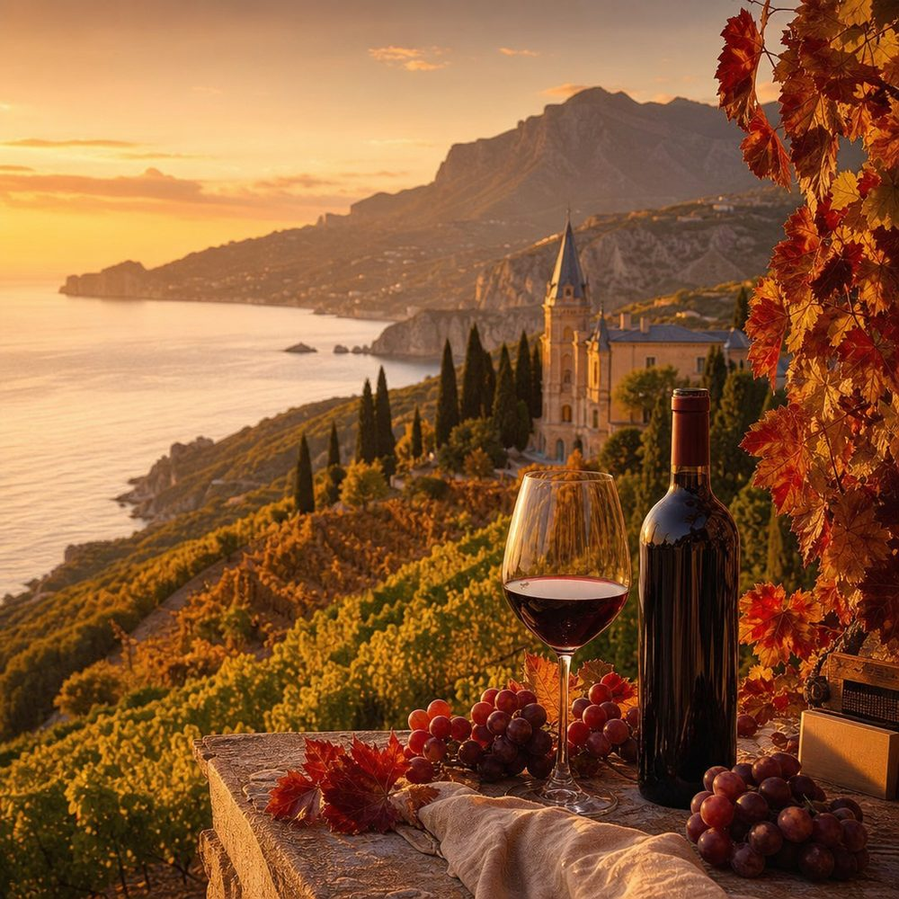
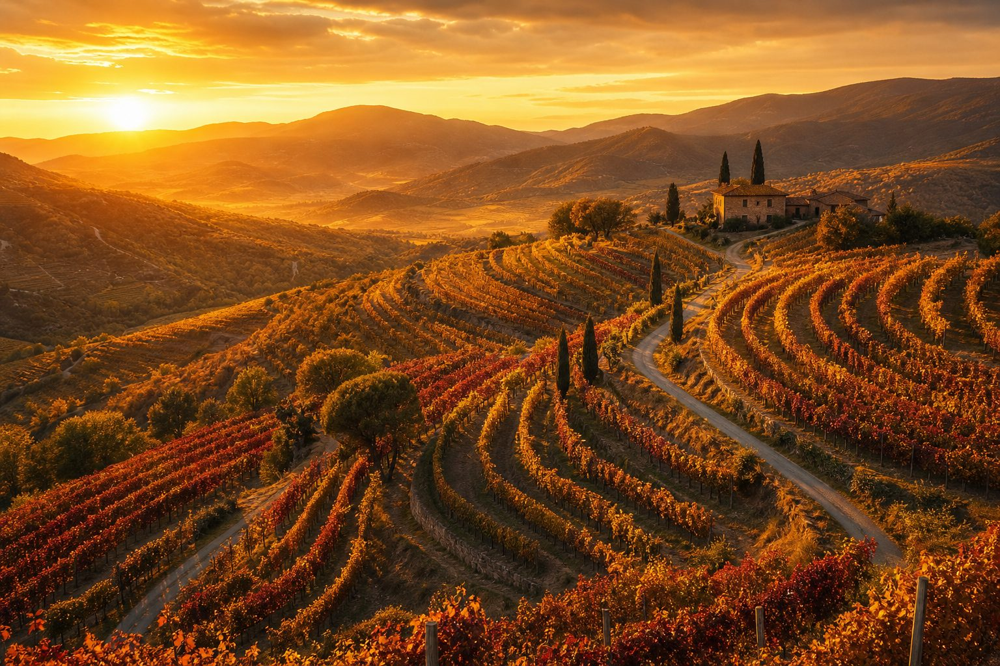
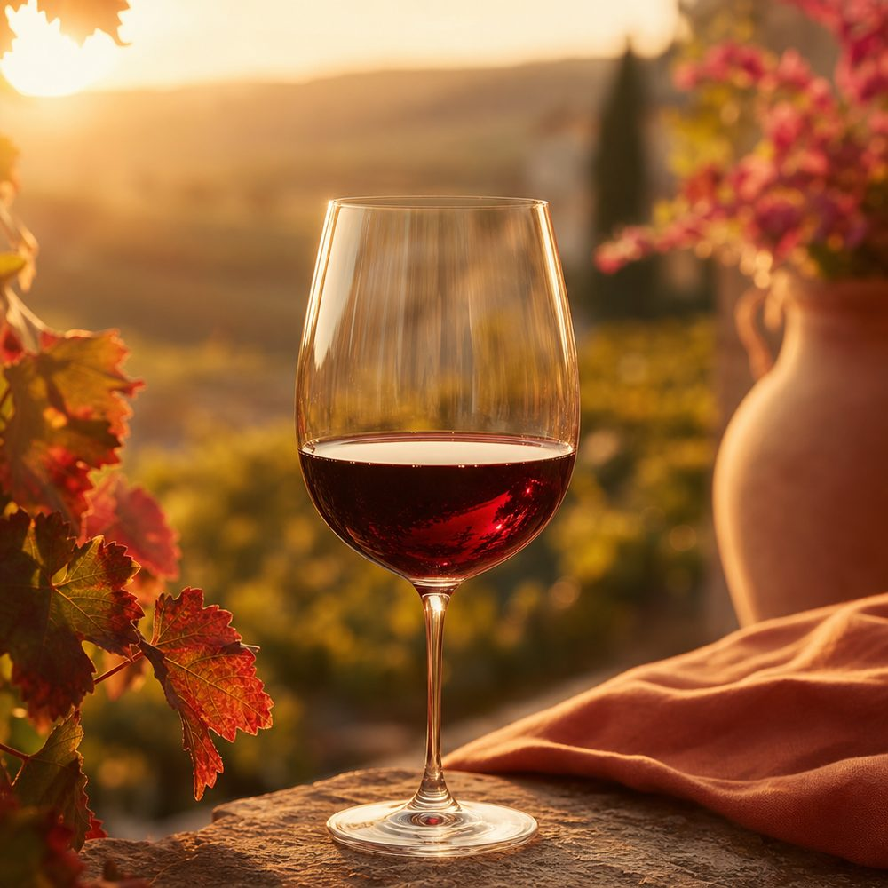
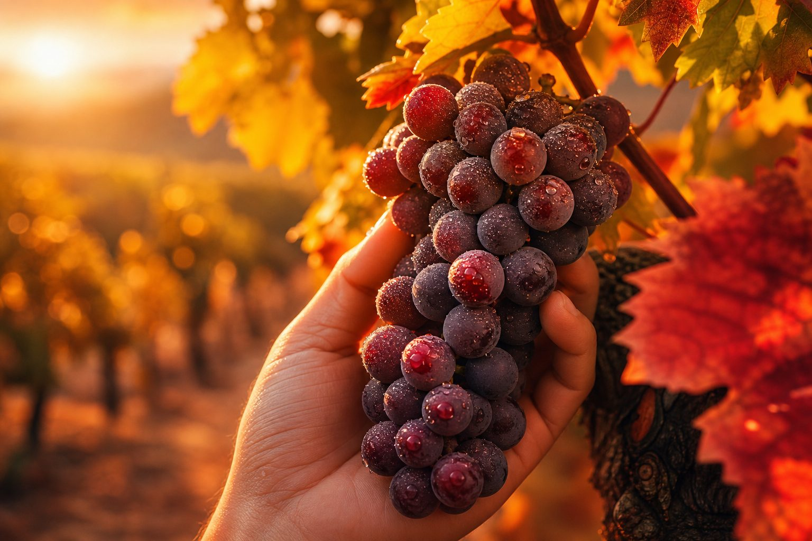
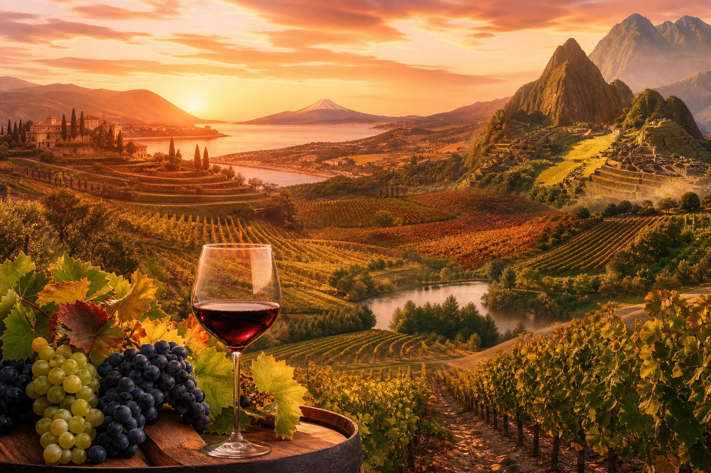
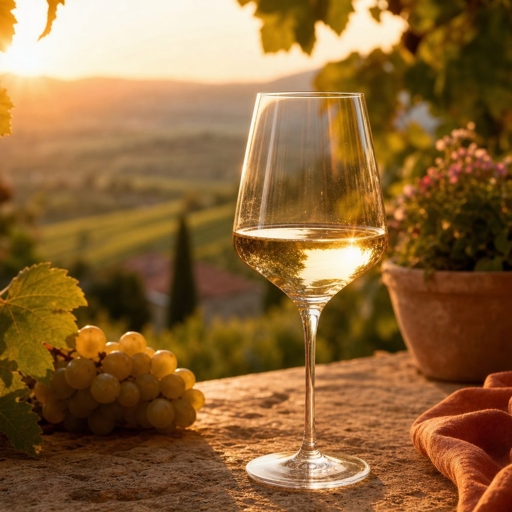
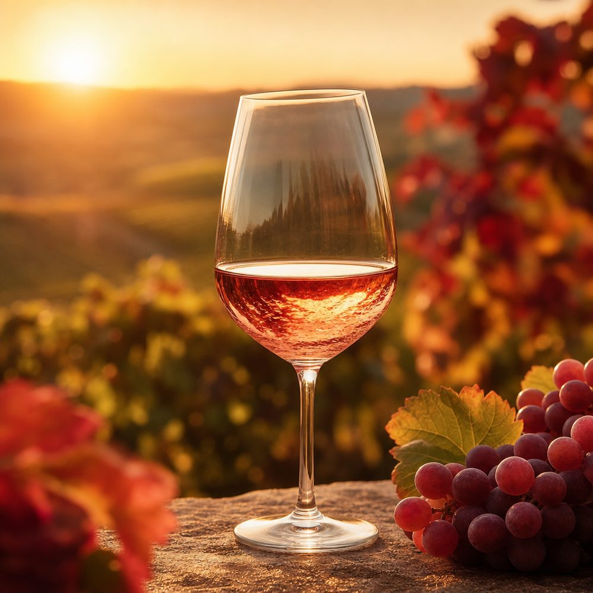

🧳 Реальный винный турист
Планируйте маршрут по винодельням России и мира: дегустационные залы, экскурсии по подвалам, гастрономия и виды на виноградники. Мы подскажем, что посмотреть и попробовать на месте.
Маршруты по регионам →
Откройте виноделие планеты — от черноморских террас Крыма до вулканических островов Атлантики. Поезжайте на дегустацию или «отправьтесь» в страну, открыв бутылку её вина.
Вино — это машина времени и телепорт одновременно. Выбирайте свой формат.

Планируйте маршрут по винодельням России и мира: дегустационные залы, экскурсии по подвалам, гастрономия и виды на виноградники. Мы подскажем, что посмотреть и попробовать на месте.
Маршруты по регионам →
Не выходя из города, купите в магазине бутылку из нужной страны — и «перенеситесь» туда по вкусу. Для каждого региона мы подсказываем, какое вино открыть, чтобы почувствовать его характер.
Что купить и попробовать →Пять маршрутов — от основ виноделия до экзотики океанских островов.

История, терруар, технология, сорта и искусство дегустации — простым языком и с интересными фактами.

Крым, Кубань, Дагестан, Дон — и колыбель вина Грузия, коньяки Армении, оазисы Средней Азии.

60 стран на шести континентах: классика Европы, новый свет Америк, экзотика Азии и Африки.

Вулканические виноградники Атлантики и тропическая экзотика Тихого океана.

Как смотреть, нюхать и пробовать вино, при какой температуре подавать и как хранить дома.

Зачем мы собрали этот атлас вина и как им пользоваться обоим типам путешественников.
Наведите на бокал — у каждого цвета свой характер и свои страны.

Свежесть, цитрус и минеральность. Прохладные регионы: Германия, Грузия (квеври), Новая Зеландия.

Ягоды, лёгкость и солнце в бокале. Прованс, Крым, Кубань — идеально для тёплого вечера.
Глубина, танины и характер. Саперави, Каберне, Мальбек — от Грузии до Аргентины.

Наш ИИ-помощник уже работает: он ответит на любой вопрос о вине, подберёт бутылку под блюдо, настроение или страну мечты и составит ваш личный винный маршрут. Прямо здесь, на сайте — или в Telegram под именем @VinoTerra_AI_bot, если так удобнее.